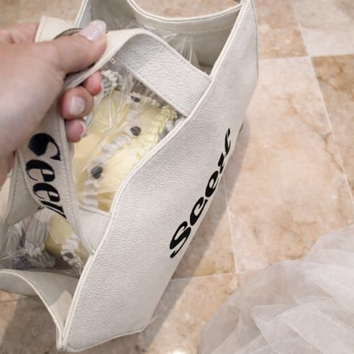
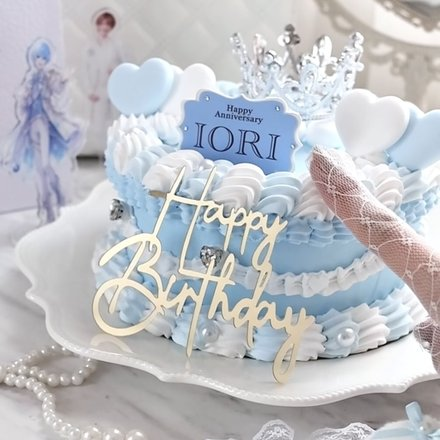
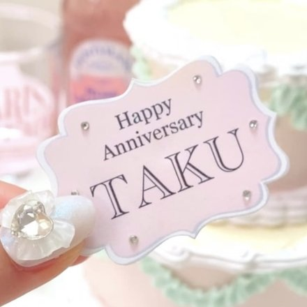
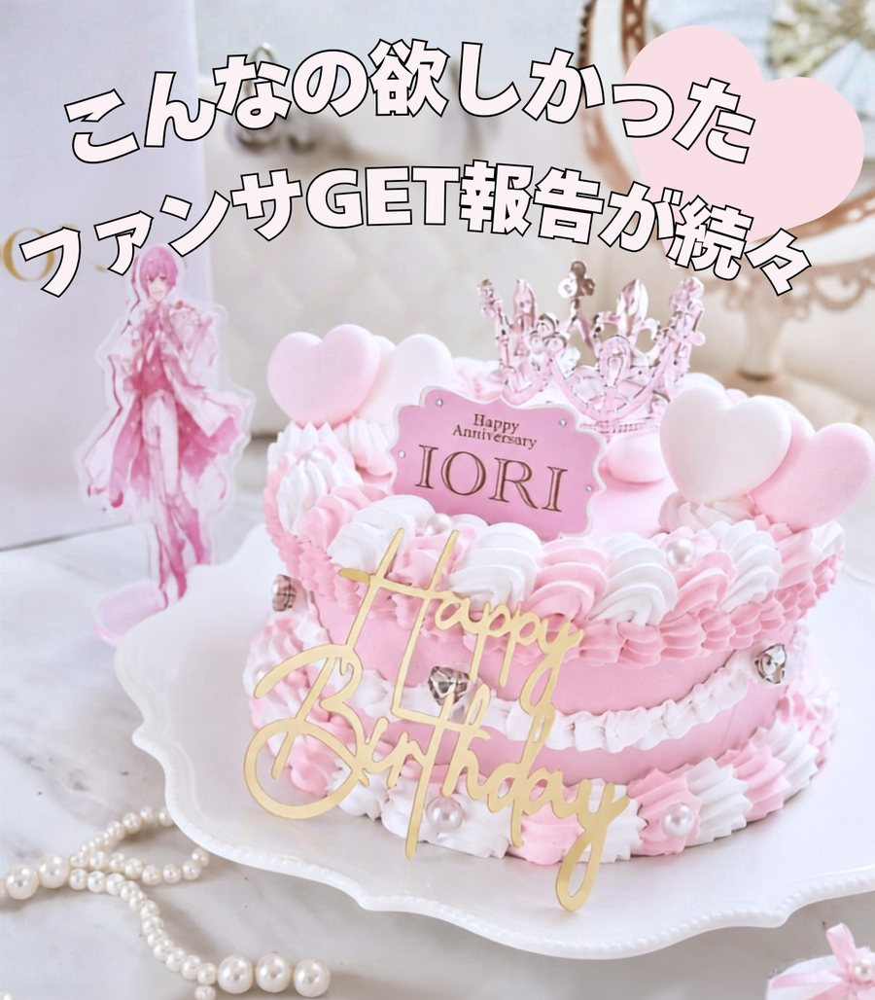
持ち運びが大変・食べきれない・推しに気づいてもらいたい💭
そんな悩みを全て解決します！
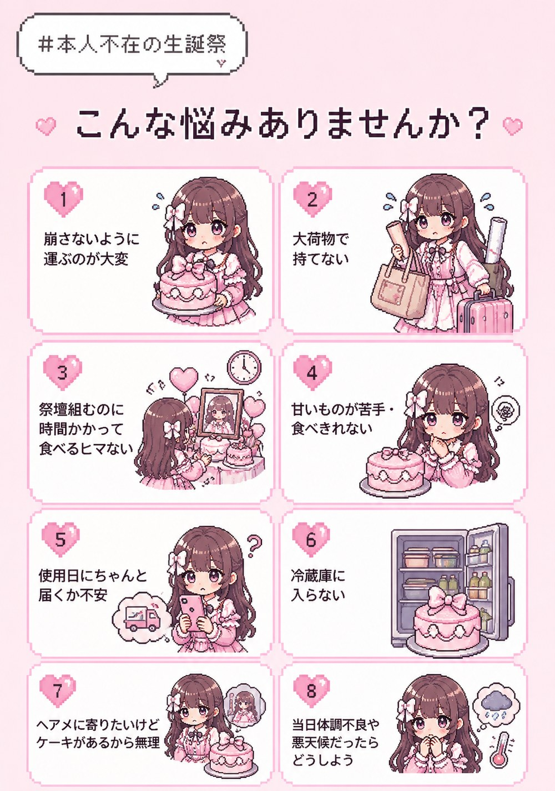
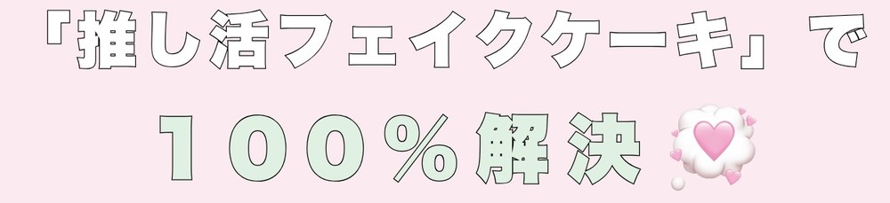



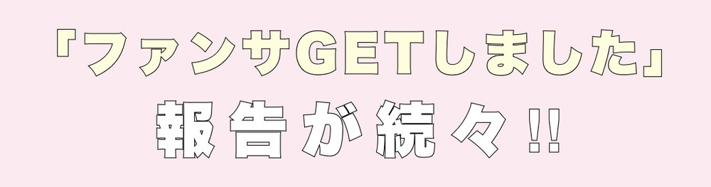
推しにプレゼントしたら公式SNSにケーキの写真を載せてくれました
イベントに持参したらローソクの火を消すみたいにフーってしてくれました
Xに投稿したら推しがいいね！してくれました
番組観覧に持って行ったら推しがファンサくれました
周年ライブに2年連続持って行ったら「昨年も持ってきてくれたよね！」って推しが覚えていてくれました
推しにプレゼントしたらケーキを持って配信してくれました
イベント前にプレゼントBOXに入れたらステージで持ってくれました
推しにプレゼントしたら公式SNSにケーキの写真を載せてくれました
イベントに持参したらローソクの火を消すみたいにフーってしてくれました
Xに投稿したら推しがいいね！してくれました
番組観覧に持って行ったら推しがファンサくれました
周年ライブに2年連続持って行ったら「昨年も持ってきてくれたよね！」って推しが覚えていてくれました
推しにプレゼントしたらケーキを持って配信してくれました
イベント前にプレゼントBOXに入れたらステージで持ってくれました
実際のDMはインスタのハイライトで公開中
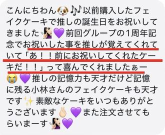
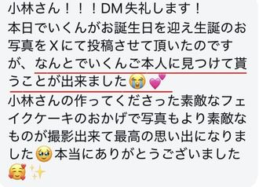
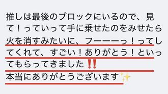
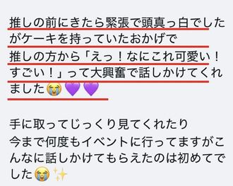
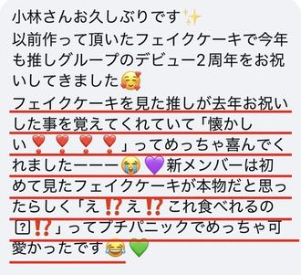
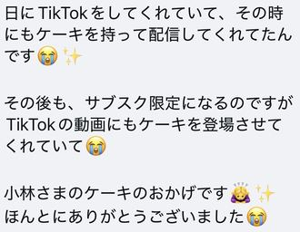
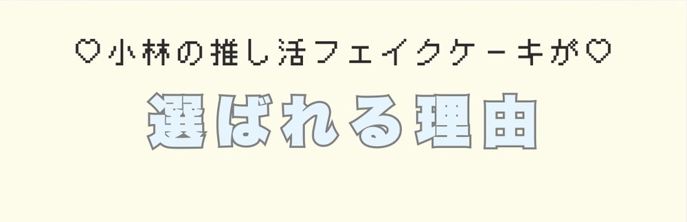
長年の推し活経験を活かして、ファンサにつながる確率をアップˎˊ˗その工夫は企業秘密です
推し活ガチ勢だからこその着眼点と
実際の使用シーンを理解した提案
過去の投稿やレビューを見て決めました！
色や見た目何もかも想像以上で過去1の生誕祭になりました！
親身になって相談にのってくれて、丁寧な対応が嬉しかったです。届いたケーキもとても可愛くてしあわせな気持ちになりました。
人気アニメキャラ推し実際のDMはインスタのハイライトで公開中
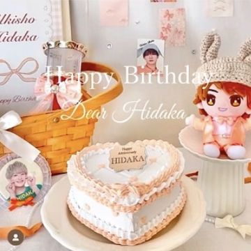
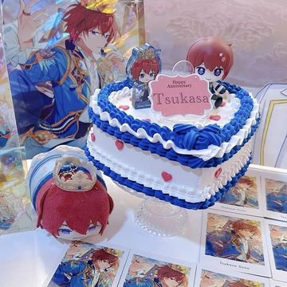
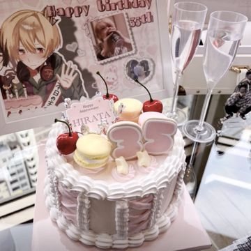
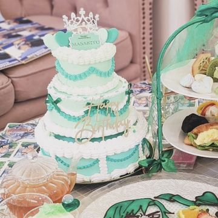
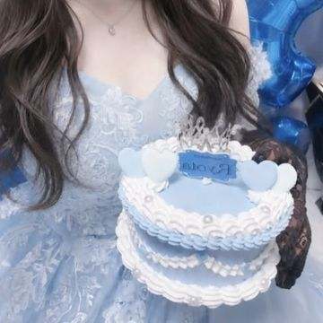
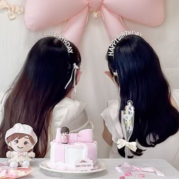
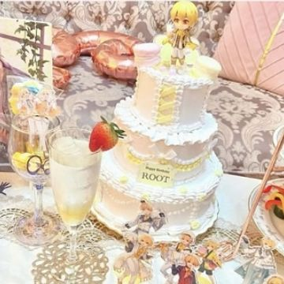
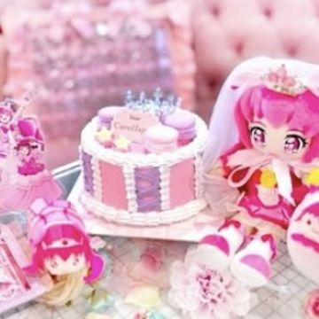
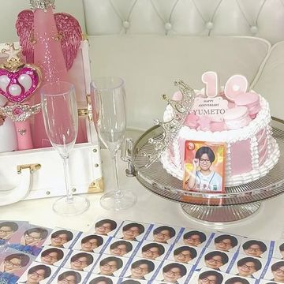
豊富なカラーから自分好みにカスタムできる
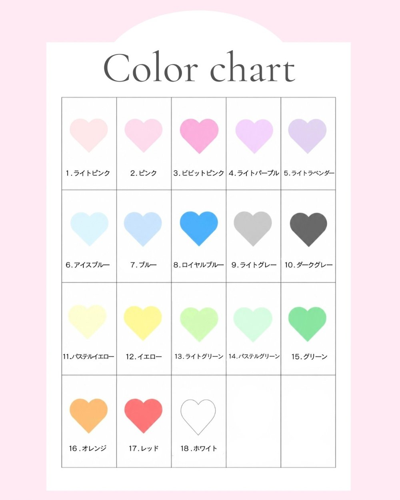
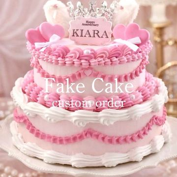
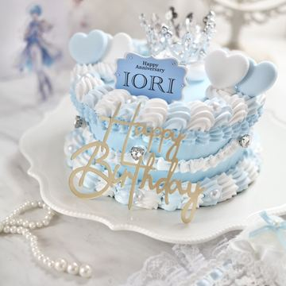
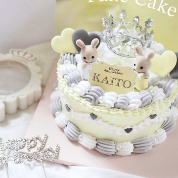
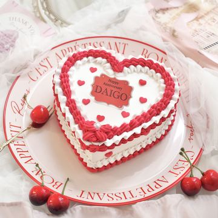
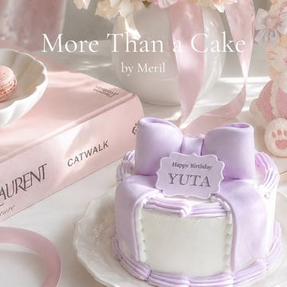
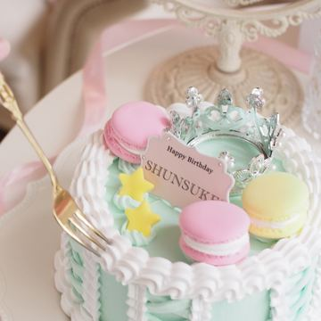
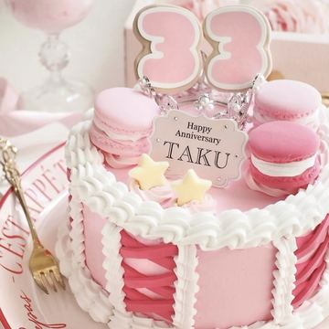
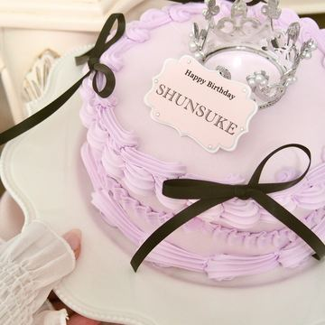
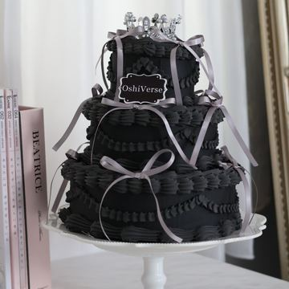
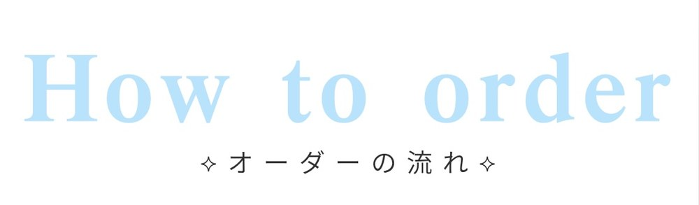
オンラインショップで
デザインを選択
色やオプションを
選択
ご入金日から
約30日後に発送
お届けするのは
フェイクケーキとその先に広がる体験
フェイクケーキを通して
「生誕祭の苦労を解決したい」
「推しに気づいてもらいたい」
「ファンサもらいたい」
そんな願いを叶えるお手伝い
それが私の役目です。
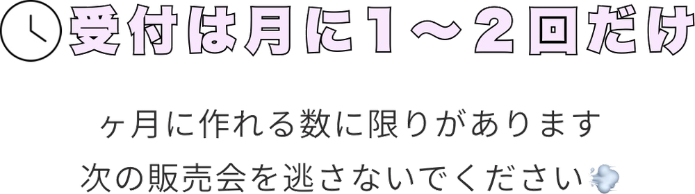
次回販売会をチェックする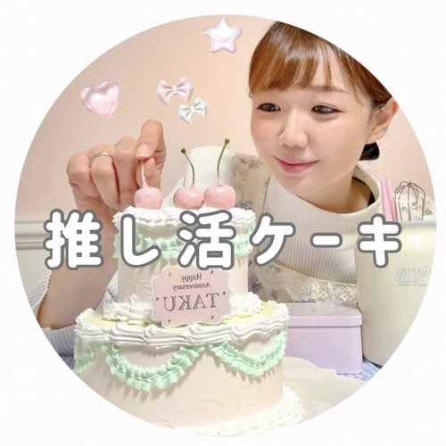
初めての推しは小学生のとき、当時大人気だった
アーティスト。その後20年以上推し続けたガチ勢オタク
推しのことで頭がいっぱいだった私も、現在は子ども中心の生活。長年の推し活経験で得た知識や着眼点を
いま推し活に全力な人のために役立てたい
そんな想いで発信しています。